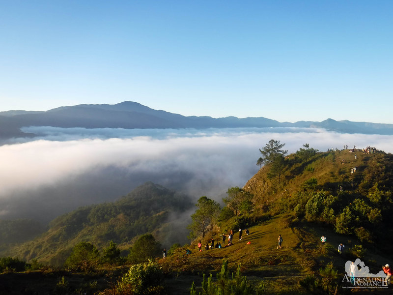

|
|
 |
Luzon sits at the northern end of the Philippines, and is the country’s largest and most populous island. It’s known for its mountains, beaches and coral reefs, and is home to Manila, the national capital. Set on a deep bay with famed sunsets, the city has many Spanish-colonial landmarks, national memorials and monuments, a centuries-old Chinatown and a diversity of museums.
Learn more about Luzon |
 |
 |
Visayas is one of the Philippines' 3 main island groups. In Central Visayas, Cebu City’s Spanish colonial architecture includes the triangular Fort San Pedro and the Basilica del Santo Niño. Bohol Island’s Chocolate Hills are a group of more than 1,000 conical, grass-covered mounds that turn brown in the dry season. In Corella, rare bug-eyed primates called tarsiers are protected at the Philippine Tarsier Sanctuary.
Learn more about Visayas |
 |
Mindanao encompasses the large island of Mindanao plus smaller islands in the southern Philippines. In its largest city, Davao, the Philippine Eagle Centre and Davao Crocodile Park showcase local wildlife. The urban People's Park features statues of indigenous people and the Durian Dome, named after the spiky, smelly fruit that grows in abundance on Mindanao. Southwest, the Mount Apo volcano has trails and a lake.
Learn more about Mindanao